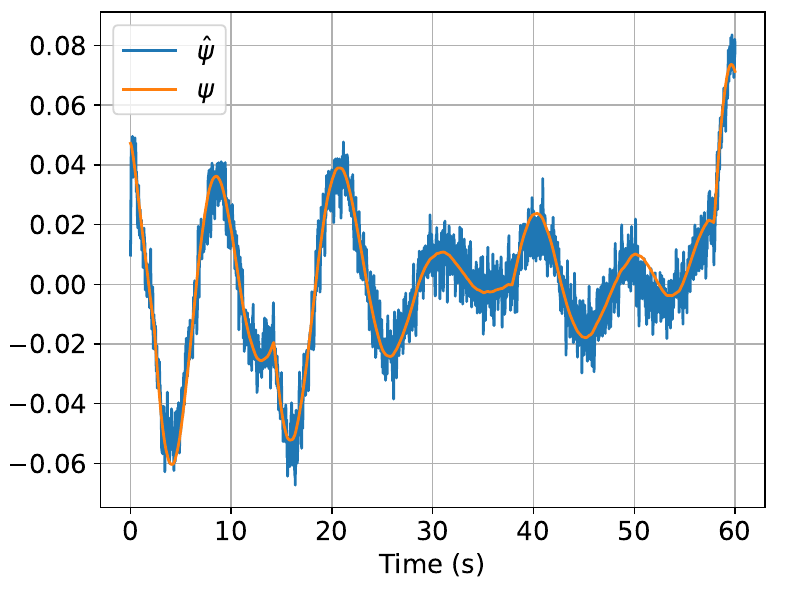
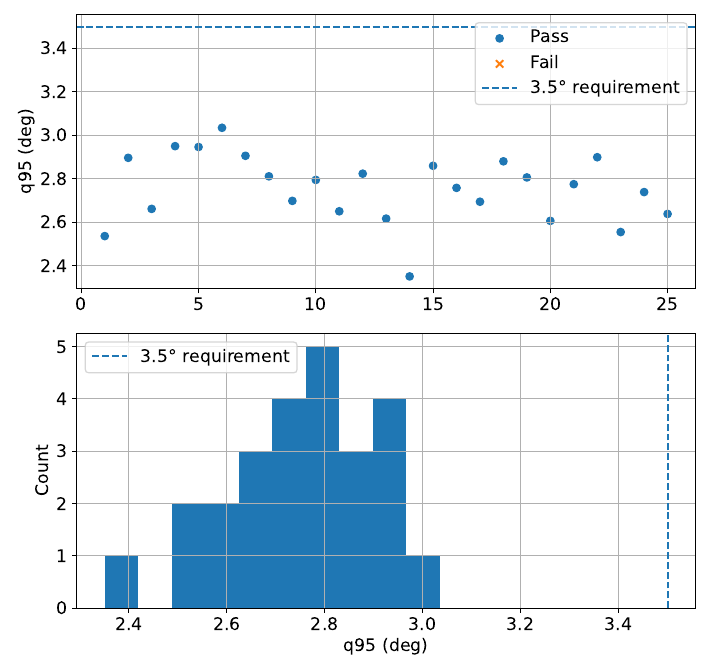

09 / Spacecraft control / Evaluated in simulation
AE353 · Two-person team project
Spacecraft reaction-wheel control with star-based attitude estimation
With Adrian Huang, I designed an LQR reaction-wheel controller and a dual-LQR observer to orient a spacecraft hatch for an astronaut’s return. The study evaluated attitude estimation and mission completion separately: the report found accurate estimation under noise and debris disturbances, while identifying limitations in the integrated controller’s recovery performance.
- Team contribution
- Controller and observer work reported jointly with Adrian Huang
- Tools
- LQR · State estimation · Reaction wheels · PyBullet
- Outcome
- Observer criterion reported met; 64% mission success in the report’s 200-trial study

Control from noisy measurements
The task was to keep a spacecraft hatch oriented for an astronaut’s return. Using the supplied course dynamics, our team worked with six attitude and angular-rate states, four reaction wheels in a tetrahedral arrangement, and seven observed stars producing fourteen image-plane measurements.
Rank-six controllability and observability checks supported LQR feedback and a dual-LQR observer. We tuned their weights and evaluated the resulting system in a Python/PyBullet simulation with noisy measurements and debris disturbances.
Two distinct evaluation results
The report concludes that the observer met its accuracy criterion. The combined system achieved 64% mission success against an 80% target.
The observer metric was the 95th percentile of the yaw–pitch–roll error norm over 20–60 seconds. Every trial shown in the report’s observer figure falls below 3.5°. The report describes this as a comfortable accuracy margin under the tested noise and disturbances.
For the full mission, the report gives 64% successful entries across 200 sixty-second simulations. Its conclusion contrasts this with roughly 85% in an earlier controller-only setting, before the observer and added noise. Accurate estimation therefore did not by itself ensure a successful entry.
{kind=link}

Implementation & saved-run evidence
SpacecraftDemo.ipynb includes the wheel-layout model, linearization and rank checks, feedback and observer gains, and a Controller that updates its state estimate from star measurements and issues four wheel-torque commands. Trial helpers log mission outcomes and calculate estimation-error percentiles.
The supplied notebook saves a 25-trial run with 64% mission success, whereas the report describes 200 trials. Its observer-check call uses a 5° threshold, while the plot and report use 3.5°. The plotted values are below 3.5°, but the notebook is retained as development evidence rather than presented as a reproduction of the full reported experiment.
Engineering conclusion
The completed work combined a functioning attitude observer with reaction-wheel feedback and evaluated both against explicit criteria. The report attributes the remaining mission shortfall to the interaction of disturbances, noise, and limited control authority.
More systematic selection of feedback and observer weights was proposed as the next improvement. This preserves the report’s successful estimation result alongside the integrated system’s unmet mission target.